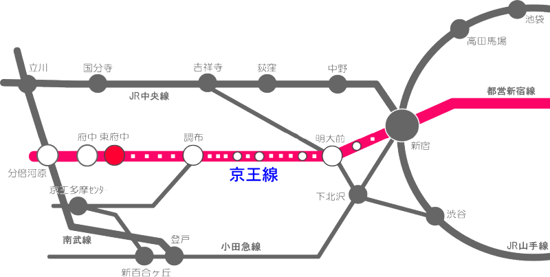

移動先のご案内
交通アクセスページは /access/ に移動しました。ブックマークや内部リンクの更新をお願いします。
基本情報
📍 所在地
📍 Googleマップ
🚃 電車でのアクセス
🚄 新宿から（特急利用）
Step 1
京王線新宿駅より特急列車で調布駅へ
Step 2
調布駅で各駅停車に乗換え
Step 3
東府中駅下車
🚊 新宿から（直通）
- 京王線新宿駅より急行・快速列車利用
- 約20〜30分で東府中駅下車
- 乗換え不要で便利
🚶♂️ 駅から寮まで
京王線東府中駅より徒歩約10分
駅から寮までは平坦な道のりで、迷うことなく到着できます。

※画像クリックで拡大
🚗 お車でのアクセス
🛣️ 高速道路利用
🅿️ 駐車場について
寮見学や面談でお越しの際は、事前にお電話にてご相談ください。
TEL: 042-369-7761
🌳 周辺環境
🏛️ 文化・教育施設
- 府中の森公園（徒歩5分）
- 芸術劇場（徒歩5分）
- 生涯学習センター（徒歩4分）
- 市民美術館（徒歩6分）
- 市立図書館（徒歩12分）
🛒 生活施設
- コンビニエンスストア（徒歩3分）
- スーパーマーケット（徒歩8分）
- 郵便局（徒歩7分）
- 銀行・ATM（徒歩10分）
- ドラッグストア（徒歩6分）
🏥 医療・その他
- 府中病院（車で10分）
- 内科・歯科クリニック（徒歩5分）
- 薬局（徒歩5分）
- 警察署（徒歩8分）
✨ アクセスのポイント
- 新宿まで約30分 - 都心部への通学・通勤に便利
- 府中の森公園隣接 - 緑豊かな環境で勉学に集中
- 文教地区 - 大学や研究機関が点在する学術エリア
- 生活便利 - 日用品の買い物や医療機関が近隣に充実
- 静かな住宅街 - 落ち着いた環境で学生生活を送れる